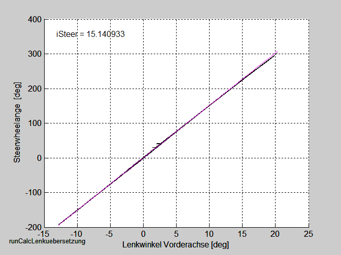

Mo 24.11.328 09:11:46
GMV-Messungen mit Datalyser
1 Spurwechsel 70 km/h 0.0025 1/m
2 Spurwechsel 70 km/h 0.0036 1/m
3 Spurwechsel 70 km/h 0.0057 1/m
Fr 21.11.325 13:42:14
GMV-Messung:
1-3 Spurwechsel 70 km/h 0.0025 1/m
4-6 Spurwechsel 70 km/h 0.00360 1/m, letzte Messung wurde nach rechts gelenkt
7 Spurwechsel 70 km/h 0.00570 1/m,
8-9 Spurwechsel 70 km/h 0.00570 1/m, mue-Limit = 1.3 (von 0.9)
10 Spurwechsel 70 km/h 0.00570 1/m, mue-Limit = 1.1 (von 0.9)
11 Kurve 60 km/h 0.002 !/m
12 Kurve 80 km/h 0.002 1/m
13 Kurve 80 km/h 0.003 1/m
14 Kurve 80 km/h 0.004 1/m zu langsam
15 Fehlmessung
16 Kurve 80 km/h 0.004 1/m
Fr 07.11.311 10:25:33
Shift_to_high_gear_top_limit 100
Shift_to_high_gear_bottom_limit 100
HADXparam.KcKpVelFac 0.8
HADXparam.KcKdVelFac 1.2
HADXparam.KcKpPosFac 1.0
HADXparam.KcAccRefFacPlus 0.8
HADXparam.KcAccRefFacMinus 0..8
Hallo Thomas,
falls bei der Inbetriebnahme Pendelungen sichtbar werden, als erstes zu Punkt 3 gehen und die Parametrierung dort rückgängig machen bzw. anheben.
In der eingecheckten Version sind folgende Parameter geändert:
1) DYC_Kappa_A2_Factor,die Gewichtung von kappa_punkt in der Vorsteuerung zur Minimierung dynamischer Regelfehler, ist in den letzten Versionen zwar bereits auf 50% reduziert (DYC_Kappa_A2_Factor = 1 entspricht dabei 50%), evtl. macht aber eine weitere Reduktion Sinn, aufgrund der Sättigung werden Spurwechsel ohnhin dynamische Regelfehler besitzen. Ein Wert bis runter auf von 0 ist ein Versuch wert, dabei sollte die Seitenabweichung bei Kurvenein- und -ausfahrt auf starken Einbruch hin kontrolliert werden.
2) DYC_State_Filter_Time_Constant (kontinuierliches Filter des Kappa-Sollwertes) wurde von 0.1 auf 0.15 erhöht, Einheit in Sekunden. Die Kappa-Filterung scheint neben der kappa_punkt-Gewichtung die wirksamste Methode zur Beruhigung zu sein, auch hohe Werte (wir hatten auch schon Werte von 0.6 bzw 1 s eingestellt) gefährden nicht die Regelkreistabilität. Idealerweise muss die zeitliche Kappa-Vorausschau aber auf 2 x DYC_State_Filter_Time_Constant angepasst werden, bei 0.15 zB theoretisch auf 0.3 s, Fehlanpassungen durch geringere Vorauschau (wg begrenzter Pufferlänge) führen zu dynamischem Regelfehler vor allem bei dynamischen Spurwechseln, auf der M1 evtl. von untergeordneter Bedeutung und daher evtl. in Kauf zu nehmen...
3) HEC_Delta_Psi_Weighting von 1 auf 0.6 reduziert. Das Delta_Psi-Signal weist höheren Rauschanteil als Delta_Ys auf, durch diese Maßnahmen wird Delta_Psi gegenüber Delta_Ys quasi schwächer gewichtet. Mögliche Auswirkungen: schwächere Dämpfung der Lateralregelung (in der Simulation nur in geringem Umfang erkennbar) und Zunahme der Pendelungen. Bei Zunahme der Pendelungen oder schwacher Dämpfung (erkennbar am Überschwingen der Seitenabweichung bei Störung am Lenkrad) HEC_Delta_Psi_Weighting wieder auf höhere Werte 0.6 ...1 setzen.
Sollte nur für HEC_Delta_Psi_Weighting = 1 zufriedenstellendes Pendel- und Dämpfungsverhalten realisiert werden können, als Not-Maßnahme Parameter HEC_Kp von derzeit 1 auf kleinere Werte setzen. Ein Wert von 0.5 dürfte die Schmerzgrenze sein, HEC_Kp stellt quasi die Kreisverstärkung des kinematischen Reglers dar, geringe Werte reduzieren die Dynamik und vor allem die Fähigkeit zur Störgrößenausregelung (vor allem auch im Hinblick auf die Offsetgrößen).
Als weitere Not-Maßnahme ist die Reduktion von SAC_kp = 5; zu nennen, dem kp-Wert des Lenkwinkelreglers. Hier besteht neben reduzierter Dynamik und Störfestigkeit vor allem die Gefahr instabilen Regelverhaltens mit der Notwendigkeit der Anpassung der Gierratenrückführung.
5) LAT_Delta_Psi_Filter_Coeff (diskrete Tiefpass-Filterung von Delta_Psi) von 0.4 auf 0.15 reduziert, die Entsprechung des Koeffizienten zur Filterzeitkonstante sind

In der Offline-Simulation greifen erst weitaus kleinere Koeffizienten (0.02 ... 0.05) und beruhigen das Signal, in der closed Loop Simulation in Carmaker nimmt dann allerdings die Regelkreis-Dämpfung immer mehr ab.
Idealerweise kann HEC_Delta_Psi_Weighting wieder auf 1 gesetzt werden und die ganze Stör-Problematik durch dieses Filter behoben werden. Wie immer ;) besteht die Schwierigkeit darin, einen günstigen Kompromiss zu finden...
6) LDC_Controller_Mode ist in den letzten Versionen von 2324 auf 276 gesetzt, d.h. delta_ys wird dadurch nicht mehr durch delta_psi gestützt. Testweise könnte man LDC_Controller_Mode wieder auf 2324 setzen, womöglich gibt es trotz Störanteil von delta_psi ein günstiges Verhalten durch das PT1-Verhalten des Filters.
Berechtigtes Potential zur Reduzierung der durch delta_ys hervorgerufenen Störungen hat auch die Wahl von LDC_Controller_Mode = 1300 (entspricht Verdopplung der Länge des delta_ys-Filters)
7) LAT_Oc_Ki von 0.005 auf 0.02 erhöht. Der Faktor entspricht quasi der Lernrate der Offsetkalibrierung, diese wurde damit von ca 300s / 0.2Grad Lenkwinkeloffset auf 75s / 0.2Grad Lenkwinkeloffset reduziert. Maßnahme ist in der Simulation unauffällig, evt. sind sogar weitaus höhere Werte möglich (in der Simulation ist auch ein Wert von 1 vertretbar), messbare Zunahme der Pendelungen allerdings ab LAT_Oc_Ki > 0.1.
8) Das Problem der extremen Seitenabweichung bei Kurveneinfahrt evtl. durch weitere Erhöhung der Kappa-Vorausschau und damit frühes Anlenken reduzieren, um den Preis, dass die Trj verschliffen wird.
Sollte ich morgen nicht am Platz sein, besser auf dem Handy anrufen: 0176-97592403
Messungen
Ah_M1_Runden_
2014/10/30
Messung B 3 mit RT3000 Gierrate
Messung B 4 mit ICM Gierrate
2014/10/28
GMV
Problem mit Trajektorienvorgabe bei Pf_Laengs_Kurve_80_KP45_1.asc
Messung 1: 60 kmh, KpPos = 1.0 KpVel = 1.0 KdVel = 0.0 schwingt etwas in der Ebene
Messung2 60 kmh, KpPos = 0.75
Messung8: 60 kmh KpPos = 1.0 KpVel = 0.75 KdVel = 0.2
Messung13 60 kmh, KpPos = 0.6 KpVel = 1.5 KdVel = 0.75 (0.6)
Messung16 80 kmh, KpPos = 0.7 KpVel = 1.5 KdVel = 1.0
Messung22 100 kmh, KpPos = 0.8 KpVel = 1.5 KdVel = 1.1
Messung25 120 kmh, KpPos = 0.9 KpVel = 1.5 KdVel = 1.2
2014/10/27
Pf_Laengs_ANull_8.asc Moment zu null geworden?
Pf_Laengs_ANull_9.asc
Pf_Laengs_ANull_10.asc sehr hohe Längsfehler warum?
2014/10/23
Pf_Laengs_60_80_100_nurvel_1: Erste Messung PREDICTION_TIME_POS[0] = 32000, PREDICTION_TIME stellt sich alleine ein
Pf_Laengs_60_80_100_nurvel_2: PREDICTION_TIME_POS[0] = 32000, PREDICTION_TIME_VEL[0] = 2000, erst HAng, dann Ebene
schwingt stärker, und bei t=66 geht der Regler auf Schleppmoment??
Pf_Laengs_60_80_100_nurvel_3: PREDICTION_TIME_POS[0] = 32000, PREDICTION_TIME_VEL[0] = 1000, erst HAng, dann Ebene
Fr 17.10.2014 09:03:45
- 4699 Passwort für FUSI-Off
Auf ZGW mit Internetexplorer Eintellungen durchführen
eigenen Rechner: 192.168.1.101
http://192.168.1.10/GWNG-Master
Passwort 2677
Di 14.10.2014 07:52:55
Messungen Stop and Go, 3. Messung bei zweiten Anfahren wieder lange gewartet
Konstant50kmh 2 und 3 war nichts
Konstant70kmh 4, 5 ,7 und 8 waren nichts
LIN: i0=0, nord=2: index[0]=index0,index[1]=index0+1
BSPL: i0=0, nord=4: index[0]=index0,index[1]=index0+1,index[2]=index0+2,index[3]=index0+3
BSPLM1: i0=1, nord=4: index[0]=index0-1,index[1]=index0,index[2]=index0+1,index[3]=index0+2
MIT6: i0=2, nord=6: index[0]=index0-2,index[1]=index0-1,index[2]=index0,index[3]=index0+1,index[4]=index0+2,index[5]=index0+3
LIN: i0=0, nord=2: indexPre[0]=index0 indexAct[0]=index0+1
BSPL: i0=0, nord=4: indexPre[0]=index0 indexAct[0]=index0+1,indexAct[1]=index0+2,indexAct[3]=index0+3
BSPLM1: i0=1, nord=4: indexPre[0]=index0-1,indexPre[1]=index0 indexAct[0]=index0+1,indexAct[1]=index0+2
MIT6: i0=2, nord=6: indexPre[0]=index0-2,indexPre[1]=index0-1,indexPre[2]=index0 indexAct[0]=index0+1,indexAct[1]=index0+2,indexAct[2]=index0+3
Do 25.09.2014 09:22:48
- Längere Trajektorie ausprobieren
- Vorausschau rausnehmen => FctParam.TrajDTProjectKappa = 150
- Laufzeitmessung
- dy-Filter:
- Falls der Algo nicht lernen will, SAC_Delta_Ys_Error_Thrs auf größere Werte setzen, z.B. von derzeit 0.1 auf 0.2 => LAT_Lateral_Controller_P.SAC_Delta_Ys_Error_Thrs_Value
- Ausgabe Lernwerte auf CAN => FctParam.CanMessSendTypeCAN1 = 511 -> 1023
- LDC_Controller_Mode = 276 (default-Wert) bedeutet Mittelung von delta_ys über 16 Werte. => LAT_Lateral_Controller_P.LDC_Controller_Mode_Value
- Die beiden Alternativ-Filter wären:
- 1) Rekonstruktion von delta_ys aus delta_psi: LDC_Controller_Mode = 2324
- Dieser Filter ist noch nicht final abgestimmt, dennoch bitte mal testen, kann zum Aufschwingen führen.
- 2) Mittelwert über 32 Werte: LDC_Controller_Mode = 1300
- Dieser Filter macht alles platt, allerdings deutlich erhöhtes Risiko des Aufschwingens.
- Falls keine Verbesserung sichtbar, dann bitte DYC_State_Filter_Time_Constant von derzeit 0.1 auf zB 0.3 versuchsweise erhöhen. => LAT_Lateral_Controller_P.DYC_State_Filter_Time_Constant_Value
- PREDICTION_TIME_POS[0] = 2500 ms für Positionsregelung : => PREDICTION_TIME_POS[0]
- innerhalb dieser Zeit sollte die aktuelle Positionsabweichung ausgeregelt werden,
- je kleiner desto starker wird Positionsreglung gewichtet.
- Prediction_time_max = (5000); /* Pretiction_time in ms]*/ für DV-regelung in quasistationär Fahrten
- Prediction_time_min = (1000); /* Pretiction_time in ms]*/ für DV-regelung in Beschleunigungs- oder Bremsmavönern
- Messung
- Messungen C:
- 1) VPU5-Ausgabe eingeschaltet, SAC_Delta_Ys_Error_Thrs = 0.2 eingestellt, da bei erster Fahrt keine Daten gespeichert wurden
- Prediction_time_max = 6000
- Messung 1 + 2 LDC_Controller_Mode = 276
- Messung 3 + 4 LDC_Controller_Mode = 2324
- Messung 5 + 6 LDC_Controller_Mode = 1300
- Messung 7 gemischt 276/2324/1300, dann 1300 in der 1. Kurve bis 2. Kurve
- Messung 8 10 ms 276
- Messung 9 20 ms 276
- Messung 10 (in Messung 11 ist Lenkung ausgestiegen )
- Messung 11+12 Lenkung war schon ausgestiegen
- Mess 14: 20 ms 2324 in der Kurve ist mehrmals ausgesetzt auch bei Wechsel von links in rechts
- Mess 15: 14 20 ms 2324 gut durhcgekommen
- Mess 16: 14 20 ms 2324 gut durhcgekommen
- Mess 17: nio
- Mess 18: 14 20 ms 2324 gut durhcgekommen Trajektorie mit RT3000 Lenkrad sehr ruhig
- Mess 19: 14 20 ms 2324 gut durhcgekommen Trajektorie mit RT3000 Lenkrad sehr ruhig
- Mess 20: 14 20 ms 2324 mit Selbstlokalisierung, auch ruhig
- Mess 20: 14 20 ms 2324 mit Selbstlokalisierung, auch ruhig
- Mess 21: 14 20 ms 2324 mit Selbstlokalisierung, auch ruhig
- Mess 22: 14 20 ms 2324 mit Selbstlokalisierung, Puffer einmal leer gelaufen, auch ruhig
- Mess 23
- kuenstliche Trajektorie mit Kuenstliche_Trajektorie_M1_140925_1.asc hat nicht funktioniert
- -----------------------------------------------------------------------------------
- A: Status
- Konnte nicht aktiviert werden, da zu starker Drift in Lokalisation
- -----------------------------------------------------------------------------------
- PREDICTION_TIME_POS[0] = 3000 Ist zu langsam beim Annähern
- Prediction_time_max = 6000
- Messung B_6
- PREDICTION_TIME_POS[0] = 2500
- Prediction_time_max = 7000 im hinteren Teil 2000
- Messung B_7
- LDC_Controller_Mode = 2324
- Dieser Mode brint subjektiv etwas mehr Ruhe
- Messung_B_8
- PREDICTION_TIME_POS[0] = 2500
- Prediction_time_max = 2000
- Überleneken und schlechtes hochbeschleunigen
- PREDICTION_TIME_POS[0] = 2500
- Prediction_time_max = 2000
- Messung_B_9: Gerade mit am Ende Rauslenken
- LDC_Controller_Mode = 1300
- Dieser Mode scheint mir etwas langwelliger zu schwingen
Do 18.09.2014 13:44:03
Output ADP_Factor_Filt[17]
ADP_N_Table[17]
ADP_Factor_Table[17]
140918_Ah_M1_closedLoop
F3 Zucken in der Lenkung in der Kurve
Versuchsreiche D hat von Trajektorie funktioniert, aber die gedämpfte Lenkung ist noch aufgespielt !!
Messung D 3: Buffer läuft voll
Mi 17.09.2014 17:29:34
Messung 2 Abschalten < 17:29 Uhr
Di 16.09.2014 13:45:03
BC_Mode Betriebscontroller:

HAD_ON_COLLOSIONAVAIDANCE => Sicherheitsbetriebe Ausweichen Bremsen mit z.B. BCU
HAD_ON_SAFE_STATE => Funktionale Sicherheitsstate Abbremsen mit 0.2 g, wenn Bremse ausgefallen,. dann Mmit Booster
HAD_ON_EMERGENCY => Nothalten, weil Fahrer nicht übernimmt Abbremsen auf STandstreifen (normal)
Do 11.09.2014 09:41:44
Ascheim Tests
5 Vorausschau 20 ms DYC_Kappa_A2_Factor = 0.8
6: + 2000 Prediction Time Längsregelung
Mi 10.09.2014 12:03:06
Ascheim Tests
Messung B
ab 5: Aussetzer VPU ??? wurde untersucht, Quick-Hack ging daneben, was zu einem Resetten der VPU führte
Messung 8 Aussetzer Vorrausschau 20
Messung 9 Vaoraussschau 15
Messung 10 Vorrausschau 15, In der Geraden starker Ruckler, Vor der Kurve Lenkung ausgestiegen
Messung 11 Zucken beim rausfahren aus vordere Kuve
Zuccken in der Geraden zurück
Messung 13 2.9 vor
Messung 14 LAT_Lateral_Controller_P.DYC_Kappa_A2_Factor_Gain =.8
hintere Kurve
Mo 08.09.2014 13:56:40
=============================================================================================
Hallo Georg,
weiter unten siehst du die Gradienten Schwelle. Fürs Bremsen wäre es dann -10 000 Nm/s.
Die Druckübersetzung war 23.47 Nm/bar VA und 12.86 Nm/bar HA
Ansonsten sollen 10 bar = 0.1 g entsprechend, was nur ungefähr stimmen kann
Mit freundlichen Grüßen/Best regards,
Thomas Berthold
Electronics Software
Advanced Engineering
Continental
Division Chassis and Safety
Guerickestr. 7
D-60488 Frankfurt/M., Germany
P.O Box 90 01 20
D- 60441 Frankfurt/M., Germany
Phone: ++49 69 76 03 - 30 52
Fax: ++49 69 76 03 - 38 20
Mobil: +49 151 64117982
Email: Thomas.Berthold@continental-corporation.com
http://www.continental-corporation.com
<$$402!>
_____________
----- Weitergeleitet von Thomas Berthold/fr/eu/au/cag am 05.09.2014 13:42 -----
Von: Hagen Boehmert/usr/cag
An: Thomas Berthold/fr/eu/au/cag@CONTI07,
Datum: 04.09.2014 14:14
Betreff: Antwort: HAF: Brems-Komfortschellen
Hallo Thomas,
die Informationen habe ich nochmal aufgearbeitet. Hier die Übersicht und zur Vollständigkeit die auch die Sicherheits-Charakteristik:
Komfort-Charakteristik
> -0,5 G für 200 ms
Gradientenlimitierung - 10 000 Nm/s und + 15 0000 Nm/s
Haltedruck im Stand 50 Bar
Sicherheits-Charakteristik
> Tabelle für 200 ms
[km/h] [G]
0 - 50 -1,54
50,29 - 120 -0,71
-120,02 - 300 -0,66
Reihenfolge Wichtig:
a. Qualifier QU_TAR_BRTORQ_SUM
b. Bremsrequest TAR_BRTORQ_SUM
Bei Abschaltung irreversibel bis Klemmenwechsel
- Hagen
Hallo Thomas,
Komfort-Schnittstelle max. 0,5 G für 200ms. Im Fahrzeug liegt das bei ca. TAR_BRTORQ_SUM.phys = -3000
Für Details lass uns morgen nochmal tel.
- Hagen
====================================================================================
Do 04.09.2014 14:37:12
keine Messung
/* CAN-Input-Daten */
/*=================*/
f32_t VxVehicle; /* #RTAS: [n: VxVehicle, u: m/s] */
f32_t YawRate; /* #RTAS: [n: YawRate, u: rad/s ] */ /* [rad/s] Yawrate offset compensated */
f32_t PitchRate; /* #RTAS: [n: PitchRate, u: rad/s ] */ /* [rad/s] Pitchrate offset compensated */
f32_t RollRate; /* #RTAS: [n: RollRate, u: rad/s ] */ /* [rad/s] Rollrate offset compensated */
f32_t AxVehicle; /* #RTAS: [n: AxVehicle, u: m/s/s ] */ /* [m/s2] VehicleAcceleration */
f32_t AyVehicle; /* #RTAS: [n: AyVehicle, u: m/s/s] */ /*Fahrzeugquerbeschleunigung im Schwerpunkt - positiv: links */
f32_t AzVehicle; /* #RTAS: [n: AzVehicle, u: m/s/s] */ /*Fahrzeughochbeschleunigung im Schwerpunkt */
f32_t V_OMEGA_Wheel_FL; /* #RTAS: [n: V_RPM_Wheel_FL, u: rad/s ] */ /* Wheelrotionspeed FL */
f32_t V_OMEGA_Wheel_FR; /* #RTAS: [n: V_RPM_Wheel_FR, u: rad/s ] */ /* Wheelrotionspeed FR */
f32_t V_OMEGA_Wheel_RL; /* #RTAS: [n: V_RPM_Wheel_RL, u: rad/s ] */ /* Wheelrotionspeed RL */
f32_t V_OMEGA_Wheel_RR; /* #RTAS: [n: V_RPM_Wheel_RR, u: rad/s ] */ /* Wheelrotionspeed RR */
ui16_t WheelPulseCount_FL; /* #RTAS: [n: WheelPulseCount_FL ] */ /* RIZ_HL: WheelPulseCounter FL */
ui16_t WheelPulseCount_FR; /* #RTAS: [n: WheelPulseCount_FR ] */ /* RIZ_HR: WheelPulseCounter FR */
ui16_t WheelPulseCount_RL; /* #RTAS: [n: WheelPulseCount_RL ] */ /* RIZ_HL: WheelPulseCounter RL */
ui16_t WheelPulseCount_RR; /* #RTAS: [n: WheelPulseCount_RR ] */ /* RIZ_HR: WheelPulseCounter RR */
f32_t SteeringWheelAngle; /* #RTAS: [n: SteeringWheelAngle, u: rad ] */ /* [rad] EPS: Steering Wheel Angle - positive: left */
f32_t SteeringWheelAngleSpeed; /* #RTAS: [n: SteeringWheelAngleSpeed, u: rad/s ] */ /* {rad/s] EPS: Steering Wheel Angle Speed - positive: left */
f32_t DriverSteeringTorque; /* #RTAS: [n: DriverSteeringTorque, u: N*m ] */ /* [N*m] driver steering torque */
ui8_t EPSStatus; /* #RTAS: [n: EPSStatus ] */ /* Status EPS */
ui8_t EPSInterfaceStatus; /* #RTAS: [n: EPSInterfaceStatus ] */ /* Status EPS Interface */
f32_t EPSMotorTorque; /* #RTAS: [n: EPSMotorTorque, u: N ] */ /* EPS Motor Torque */
f32_t RackSteerForce; /* #RTAS: [n: RackSteerForce, u: kN ] */ /* [kN] driver steering torque */
ui8_t VehicleDir; /* #RTAS: [n: VehicleDir ] */ /* - Vehicle moving direction */
ui8_t ST_DRVDIR_DVCH; /* #RTAS: [n: ST_DRVDIR_DVCH ] */ /* - BMW moving direction */
ui8_t ActualGear; /* #RTAS: [n: ActualGear ] */ /* GIC: Actual-Gaer */
ui8_t ST_GRSEL_DRV; /* #RTAS: [n: ST_GRSEL_DRV ] */ /* BMW Gear */
f32_t AccelPedalTravel; /* #RTAS: [n: AccelPedalTravel, u: Percent ] */ /* % */
f32_t AccelPedalTravelVirt; /* #RTAS: [n: AccelPedalTravelVirt, u: Percent ] */ /* % virtual, maximum (ACC,Driver)*/
ui8_t AccelPedalState; /* #RTAS: [n: AccelPedalState ] */ /* digit */
ui8_t EngineState; /* #RTAS: [n: EngineState ] */ /* digit */
ui8_t DriveDemandState; /* #RTAS: [n: DriveDemandState ] */ /* if intervention allowed */
f32_t DriveTorqueAxle; /* #RTAS: [n: DriveTorqueAxle, u: N*m ] */ /* [N*m] driving torque from DME */
f32_t DriveTorqueAxleMax; /* #RTAS: [n: DriveTorqueAxleMax, u: N*m ] */ /* [N*m] driving torque Maximum from DME */
f32_t DriveDragTorqueAxleTOP; /* #RTAS: [n: DriveDragTorqueAxleTOP, u: N*m ] */ /* [N*m] driving drag torque from DME Bottom */
f32_t DriveDragTorqueAxleBOT; /* #RTAS: [n: DriveDragTorqueAxleBOT, u: N*m ] */ /* [N*m] driving drag torque from DME Bottom */
f32_t DriveDragTorqueAxleMAX; /* #RTAS: [n: DriveDragTorqueAxleMAX, u: N*m ] */ /* [N*m] driving drag torque from DME Bottom */
f32_t DriveTrainRatio; /* #RTAS: [n: DriveTrainRatio ] */ /* ratio from Engine to Wheel */
f32_t BrakeTorqueAxle; /* #RTAS: [n: BrakeTorqueAxle, u: N*m ] */ /* [N*m] actual Brake torque from EBS */
f32_t BrakeDriverTorque; /* #RTAS: [n: BrakeDriverTorque, u: N*m ] */ /* #RTAS: [n: DriveDragTorqueAxleTOP, u: N*m ] */ /* driver brake wish */
ui8_t ECBAStatus; /* #RTAS: [n: ECBAStatus ] */
ui8_t GMVStatus; /* #RTAS: [n: GMVStatus ] */
bool_t ABS_Active; /* #RTAS: [n: ABS_Active ] */ /* VOLLBRE: ABS active (ABS regel alle 4 Räder) */
bool_t ESP_Active; /* #RTAS: [n: ESP_Active ] */ /* ESP_INFO_BL: ESP Infolampe flashing */
bool_t TCS_Active; /* #RTAS: [n: TCS_Active ] */ /* AMR_AKT_ESP active (Antriebsmomentregelung aktiv) */
ui8_t IgnitionState; /* #RTAS: [n: IgnitionState ] */ /* digit */
/* HAF_T1 */
ui8_t TestRequestTimer; /* enum Timer zur zusätzlichen Überwachung des Test-Inputs */
f32_t TestRequestedValue; /* - scaled value from CAN-Input */
ui8_t TestRequestedType; /* enum 0: no fkt, 1: steerwheeltorque, 2:AxleTorqueEngine, 3:BrakeTorque */
ui8_t TestRequestedStatus; /* enum 0: no demand, 1: demand set */
/* VBox */
f32_t VBoxLatitude; /* rad Latitude */
f32_t VBoxLongitude; /* rad Longitude */
f32_t VBoxHeading; /* rad HeadingAngle VBox */
ui8_t VBoxCanInpStatus; /* enum Status zur Berechnung Position */
ui8_t VBoxTimer1; /* enum Timer zur zusätzlichen Überwachung der VBox */
ui8_t VBoxTimer2;
/* HAF_BC */
ui8_t BetrCtrlTimer; /* enum Betriebscontroller Timer zur zusätzlichen Überwachung */
ui8_t BetrCtrlAliveCounter; /* enum Betriebscontroller AliveConunter */
ui8_t BetrCtrlMode; /* enum Betriebscontroller FCT_BC_MODE_* */
ui8_t BetrCtrlTakeOverOverrideden; /* enum Betriebscontroller Test-Driver override */
/* HAF_F1 */
#define FCT_TRAJ_EXPECTED_MAX_VALUES (71) /* maximal zu erwartende Anzahl von Punkte */
ui32_t TrajTimer_ms; /* enum Timer in ms zur zusätzlichen Überwachung der Trajektorie */
ui8_t TrajReadState; /* enum Zustand Einlesen */
ui8_t TrajActive; /* 0/1 Anforderung Aktiv */
ui8_t TrajNPoints; /* enum Anzahl der einzulesenden Punkte */
ui8_t TrajNPointsLL; /* enum last loop */
i16_t TrajNPointsM; /* enum Mittelwert */
ui8_t TrajEndFlagSet;
ui32_t TrajTimeStamp[FCT_TRAJ_EXPECTED_MAX_VALUES]; /* µs Timestamp der Trajektorie */
ui8_t TrajISet[FCT_TRAJ_EXPECTED_MAX_VALUES]; /* enum Sammelstelle wer welchen Vektor beschrieben, für jeden Multiplexor wird += 1 gerechnet */
f32_t TrajX[FCT_TRAJ_EXPECTED_MAX_VALUES]; /* m Trajektorien-Punkte X-Koordinate */
f32_t TrajY[FCT_TRAJ_EXPECTED_MAX_VALUES]; /* m Trajektorien-Punkte Y-Koordinate */
f32_t TrajVel[FCT_TRAJ_EXPECTED_MAX_VALUES]; /* m/s vel Trajectory */
f32_t TrajAcc[FCT_TRAJ_EXPECTED_MAX_VALUES]; /* m/s/s acc Trajectory */
f32_t TrajTheta[FCT_TRAJ_EXPECTED_MAX_VALUES]; /* rad theta Trajectory */
f32_t TrajKappa[FCT_TRAJ_EXPECTED_MAX_VALUES]; /* 1/m kappa Trajectory */
f32_t TrajKappaP[FCT_TRAJ_EXPECTED_MAX_VALUES]; /* (1/m)/s dkappa Trajectory */
/* TimeStamp */
ui32_t TimeStamp_ms; /* ms Zeitstempel von CAN */
/* Error States */
/*==============*/
ui8_t YawRate ; /* 00 */
ui8_t PitchRate ; /* 01 */
ui8_t RollRate ; /* 02 */
ui8_t VxVehicle ; /* 03 */
ui8_t AxVehicle ; /* 04 */
ui8_t AyVehicle ; /* 05 */
ui8_t AzVehicle ; /* 06 */
ui8_t OmegaWheel ; /* 07 */
ui8_t WheelPulse ; /* 08 */
ui8_t SteeringWheelAngle ; /* 09 */
ui8_t SteeringWheelAngleSpeed ; /* 10 */
ui8_t DriverSteeringTorque ; /* 11 */
ui8_t EPSStatus ; /* 12 */
ui8_t EPSInterfaceStatus ; /* 13 */
ui8_t EPSMotorTorque ; /* 14 */
ui8_t RackSteerForce ; /* 15 */
ui8_t VehicleDir ; /* 16 */
ui8_t ActualGear ; /* 17 */
ui8_t AccelPedalTravel ; /* 18 */
ui8_t AccelPedalTravelVirt ; /* 19 */
ui8_t AccelPedalState ; /* 20 */
ui8_t EngineState ; /* 21 */
ui8_t DriveDemandState ; /* 22 */
ui8_t DriveTorqueAxle ; /* 23 */
ui8_t DriveTorqueAxleMax ; /* 24 */
ui8_t DriveDragTorqueAxleTOP ; /* 25 */
ui8_t DriveDragTorqueAxleBOT ; /* 26 */
ui8_t DriveDragTorqueAxleMax ; /* 27 */
ui8_t DriveTrainRatio ; /* 28 */
ui8_t BrakeTorqueAxle ; /* 29 */
ui8_t BrakeDriverTorque ; /* 30 */
ui8_t GMVStatus ; /* 31 */
ui8_t IgnitionState ; /* 32 */
ui8_t TimeStamp_ms ; /* 33 */
/* intern */
ui8_t Trajectory ; /* 34 */
ui8_t Hardware ; /* 35 */
ui8_t HADOFunc ; /* 36 */
ui8_t HADXFunc ; /* 37 */
ui8_t HADYFunc ; /* 38 */
ui8_t TRAJFunc ; /* 39 */
ui8_t ECBAStatus ; /* 40 */
ui8_t BetrCtrl ; /* 41 */
/* CAN-Output-Daten */
/*==================*/
/* AliveCounter M1, M2, M3 */
ui8_t AliveCounterHAF_M1;
ui8_t AliveCounterHAF_M2;
ui8_t AliveCounterHAF_M3;
ui8_t AliveCounterHAF_VPU_F;
ui8_t CounterXCPDemand;
/* Output HADX */
f32_t EngineTorqReqAxle; /* #RTAS: [n: EngineTorqReqAxle, u: N*m ] */ /* [N*m] EngineTorque Request DEM */
ui8_t Status_EngineTorqReqAxle; /* #RTAS: [n: Status_EngineTorqReqAxle ] */ /* - Status EngineTorque Request DEM FCT_REQ_STAT_OFF,FCT_REQ_STAT_ON */
f32_t BrakeTorqReqAxle; /* #RTAS: [n: BrakeTorqReqAxle, u: N*m ] */ /* [N*m] BrakeTorqe Request EBS */
ui8_t Status_BrakeTorqReqAxle; /* #RTAS: [n: Status_BrakeTorqReqAxle ] */ /* - Status BrakeTorqe Request EBS FCT_REQ_STAT_OFF,FCT_REQ_STAT_COMFORT,FCT_REQ_STAT_SECURE,FCT_REQ_STAT_COMFORT_DOF,FCT_REQ_STAT_SECURE_DOF */
ui8_t Status_Send_QU_BrakeTorqReqAxle; /* Status für Komfort oder secure Bremsen */
/* Zustände: */
/* FCT_REQ_STAT_OFF */
/* FCT_REQ_STAT_COMFORT_START */
/* FCT_REQ_STAT_COMFORT */
/* FCT_REQ_STAT_COMFORT_END */
/* FCT_REQ_STAT_SECURE */
ui8_t Status_SSM; /* - Status Stillstandsmangemanet FCT_REQ_STAT_OFF,FCT_REQ_STAT_ON */
/* Output HADY */
f32_t SteerWheelTorqueReq; /* #RTAS: [n: SteerWheelTorqueReq, u: N*m ] */ /* [N*m] requested Steerwheel torque EPS */
ui8_t Status_SteerWheelTorqueReq; /* #RTAS: [n: Status_SteerWheelTorqueReq ] */ /* - Status requested Steerwheel torque EPS FCT_REQ_STAT_OFF,FCT_REQ_STAT_ON */
ui8_t Status_DiffBrakeTorqueReq; /* #RTAS: [n: Status_DiffBrakeTorqueReq ] */ /* - Status requested Soll Differenz Bremsmoment EPS FCT_REQ_STAT_OFF,FCT_REQ_STAT_ON */
f32_t DiffBrakeTorqueReqFA; /* #RTAS: [n: DiffBrakeTorqueReqFA, u: N*m ] */ /* [N*m] Soll_Differenz_Bremsmoment_Vorderachse_Giermomentverteilung: Einzustellendes Raddifferenzbremsmoment der Giermomentverteilung an der Vorderachse. Ein positiver Wert erzeugt ein linksdrehendes Giermoment über die Vorderachse. */
f32_t DiffBrakeTorqueReqRA; /* #RTAS: [n: DiffBrakeTorqueReqRA, u: N*m ] */ /* [N*m] Soll_Differenz_Bremsmoment_Hinterachse_Giermomentverteilung: Einzustellendes Raddifferenzbremsmoment der Giermomentverteilung an der Hinterachse. Ein positiver Wert erzeugt ein linksdrehendes Giermoment über die Hinterachse. */
f32_t FactorCompensDriveTrain; /* #RTAS: [n: FactorCompensDriveTrain, u: m/m ] */ /* - Faktor_Soll_Kompensation_Antrieb_Giermomentverteilung */
/* VPU-Fusi */
ui8_t VPUFusiErrStatusBuffer[FCT_VPU_FUSI_BUFFER_N_VALUES];
/* Odometrie */
f32_t XRAOdo; /* Diese Größe ist auf die positive Länge von FCT_ODO_XY_DELTA_MODULO gebracht worden */
f32_t YRAOdo; /* Diese Größe ist auf die positive Länge von FCT_ODO_XY_DELTA_MODULO gebracht worden */
f32_t ThetaOdo; /* Diese Größe ist auf die plus/minus FCT_ODO_THETA_PI gebracht worden */
f32_t BetaRAOdo; /* Diese Größe ist auf Minimum/Maximum +/- FCT_ODO_BETA_MAX gebracht worden */
ui32_t TimeStampOdo; /* #RTAS: [n: TimeStampOdo ] */
ui8_t FehlerStatusOdo; /* #RTAS: [n: FehlerStatusOdo ] */
f32_t XRASigmaOdo; /* #RTAS: [n: XRASigmaOdo, u: m ] */
f32_t YRASigmaOdo; /* #RTAS: [n: YRASigmaOdo, u: m ] */
f32_t ThetaSigmaOdo; /* #RTAS: [n: ThetaSigmaOdo, u: rad ] */
f32_t BetaRASigmaOdo; /* #RTAS: [n: BetaRASigmaOdo, u: rad ] */
/* Motion Controller Mode */
ui8_t MotCtrlMode; /* enum Motioncontroller FCT_MC_MODE_* */
ui8_t MotCtrlErrStatusBuffer[FCT_VPU_FUSI_BUFFER_N_VALUES];
Mi 03.09.2014 14:17:22
Hallo Thomas,
FYI, habe die Autocode-Files des Lat-Regler mit den M1-tauglichen Parametern
SAC_Pid_kd = 0.04
und
DYC_State_Filter_Time_Constant = 0.1;
eingecheckt.
Als Tuning-Parameter dienen aktuell DYC_State_Filter_Time_Constant
(Kappa-Filter, je größer, desto ruhiger der Lenkradwinkel und desto größer der dynamische Regelfehler, typ Wertebereich [0.025 ... 1] )
und
DYC_Kappa_A2_Factor = 1;
(Gewichtungsfaktor für Kappa_dot, je größer, umso mehr eilt das Fahrzeug gegenüber der Trajektorie vor, desto unruhiger wird aber auch der Lenkradwinkel störungsbedingt, typ Wertebereich [0 ... 2] )
Das aktuelle cai-File D:\VPU_HAF\cancmd_cfg\cancmd_HADY5.cai ist eingecheckt.
Max4788!
ZGW8: 192.168.11.18/GWNG-Master
HAF On/Off
Do 31.07.2014 13:10:00
Transfer von Stefan Dreiseitel
\\auto.contiwan.com\CAS\Loc\ffm2\DIDU0144\xxx_Transfer_xxx\
Mi 30.07.2014 09:37:02
neue Version für Mk100 auf Protpotypenfahrzeug flashen
1. mit Xmit freischalten, schreibend flash.xmit
2. Flash-Tool Freescale V6.14 verwenden
3. Versionen liegen unter E:\dokumente\projekte\HAF\EBS,
aktuelle Version ist AA3BAO00008
Do 24.07.2014 09:12:15
Von: Norbert Balbierer/usr/cag
Hallo Thomas,
das Prinzip ist folgendes:
In jeder Trajektorien-Ros-Message ist drin:
Zeitstempel
70 Trajektorienpunkte
rosbag38_stamp.txt enthält den Zeitstempel aller ROS-Messages aus dem Bag (rechte Spalte). In der linken Spalte ist die Reale Zeit, zu der die ROS-Message aufgezeichnet wurde. Zeitstempel und reale Zeit sollten annähernd gleich sein, mit ein paar ms Versatz.
Die 70 Trajektorienpunkte in jeder einzelnen Message enthalten x,y,v,a,t (Sollzeit), kappa, kappa' und theta.
Aufgrund des Textausgabeformates von rostopic echo gibt es Pro Wert (x,y,t,...) UND pro Trajektorienpunkt-Index (1..30 im Moment) ein .txt file, welches jeweils diesen Wert[Index] aus ALLEN (ca 110) aufgezeichneten ROS-Messages enthält.
Also enthält beispielsweise x[5].txt den X-Wert des fünften Trajektorienpunktes aus allen aufgezeichneten ROS-Messages. Auch hier ist jeweils in der linken Spalte die reale Zeit aufgetragen. Da es ja immer die gleichen 110 ROS-messages sind, sind auch die Zeitpunkte in der linken Spalte in allen .txt Files die selben. Ist quasi eine gemeinsame Zeitachse über alle Trajektorien-ROS-messages.
Die Ego-Werte entstammen einer anderen Ros-Message, haben also auch abweichende Zeiten, da z.B. die Dynamics-Nachricht deutlich häufiger kommt als die Trajektoriennachricht.
Viele Grüße,
Norbert
Fr 18.07.2014 06:24:16

->

Mo 16.06.2014 11:33:15
Issue 124
Do 03.04.2014 09:17:50
TortoiseGIT: Um auf Gerrit-Server-BMW pushen oder pullen zu können, benötige ich ein Password, dass in der Gerrit-Umgebung im Explorer geholt werden muss.
Einloggen auf https://www.bmw-ft.de/confluence, dann in Gerrit, dann oben rechts Pfeil neben meinem Namen aufklappen und Settings auswählen.
Dann unter HTTP Password das Passwort entnehmen und beim Pushen oder Pullen verwenden
Do 17.03.2013
Gerrit-Ordner angelgen, darunter sind die bei BMW eingecheckten Dateien von https://Thomas.Berthold@www.bmw-ft.de/gerrit/gwng_swe_haf_motioncontrol_vorabfahrzeug
Mo 09.12.2013 11:08:08
Lenkübersetzung aus den Messungen mit Vorabfahrzeug in Aschheim:

Mo 09.09.2013 17:07:42
BMW-Gateway flashen:
Tools: DHCP-Server dhcpsrv.exe mit IP für Verbindung zu Gateway auf dem Rechner: 192.168.1.1
Funktioniert nicht mit meinem Windows-7 Rechner nicht möglicherweise lässt sich Firewall dafür nicht stoppen.
Habe den DHCP-Server dhcpsrv.exe auf dem XP-Rechner gestartet, dann ging es. (D:\PortBMW\dhcpsrv2.3\dhcpsrv.exe starten)
Flash-Tool: D:\PortBMW\CozyFlash_v1.10.1/CozyFlashGui.exe
Zuerst Kontakt zu Gateway suchen option -> Preferences
Dann Version SWE Root: GW_Motion_V1 mit Ordnerstruktur ausgewählt (Browser), Zwei Item selected und Programm starten, d.h. runterladen:
Ergebnis:
Flashprogrammierung gestartet fuer 1 SG ...
Reconnection Socket, takes up to 60s ...
ECU '0x10': ---> Starte Programmierung von ECU '0x10' nach LH v07 / SC6.7 auf SOCKET
ECU '0x10': Fortschritt: 1 %
Verbindung mit ZGW an IP "/192.168.1.4" reconnected!
Reconnection Socket, takes up to 60s ...
Verbindung mit ZGW an IP "/192.168.1.4" reconnected!
ECU '0x10': Nutze erweiterte ResponsePending Zeiten in Prog-Session: 100s
ECU '0x10': Fortschritt: 5 %
ECU '0x10': Lade SWE swfl_0000092a_001_001_001.msr fuer ECU 0x10
ECU '0x10': Datenvolumen der SWE 'swfl_0000092a_001_001_001.msr' von ECU '0x10' war 1572864 Byte ( 0x0 0x18 0x0 0x0 )
ECU '0x10': Loesche SG 0x10 mit Index 0x80340 in 100 sec ...
ECU '0x10': Fortschritt: 10 %
ECU '0x10': Beginne Datentransfer fuer ECU 0x10
ECU '0x10': Fortschritt: 13 %
ECU '0x10': Fortschritt: 16 %
ECU '0x10': Fortschritt: 19 %
ECU '0x10': Fortschritt: 22 %
ECU '0x10': Fortschritt: 25 %
ECU '0x10': Fortschritt: 28 %
ECU '0x10': Fortschritt: 31 %
ECU '0x10': Fortschritt: 34 %
ECU '0x10': Fortschritt: 37 %
ECU '0x10': Fortschritt: 40 %
ECU '0x10': Transferzeit fuer ECU '0x10': 0 min 11 sec
ECU '0x10': Transferrate fuer ECU '0x10': 142987 B/s
ECU '0x10': Beginne Signaturcheck fuer ECU 0x10 ...
ECU '0x10': Signaturcheck fuer ECU 0x10 ok!
ECU '0x10': Fortschritt: 45 %
ECU '0x10': Fortschritt: 100 %
ECU '0x10': Programmierzeit : 0 min 28 sec
ECU '0x10': Steuergeraeteprogrammierung abgeschlossen!
ECU '0x10': Lade SWE swfl_0000092b_002_007_002.msr fuer ECU 0x10
ECU '0x10': Datenvolumen der SWE 'swfl_0000092b_002_007_002.msr' von ECU '0x10' war 131072 Byte ( 0x0 0x2 0x0 0x0 )
ECU '0x10': Loesche SG 0x10 mit Index 0x20030 in 100 sec ...
ECU '0x10': Fortschritt: 60 %
ECU '0x10': Beginne Datentransfer fuer ECU 0x10
ECU '0x10': Fortschritt: 63 %
ECU '0x10': Fortschritt: 66 %
ECU '0x10': Fortschritt: 69 %
ECU '0x10': Fortschritt: 72 %
ECU '0x10': Fortschritt: 75 %
ECU '0x10': Fortschritt: 78 %
ECU '0x10': Fortschritt: 81 %
ECU '0x10': Fortschritt: 84 %
ECU '0x10': Fortschritt: 87 %
ECU '0x10': Fortschritt: 90 %
ECU '0x10': Transferzeit fuer ECU '0x10': 0 min 1 sec
ECU '0x10': Transferrate fuer ECU '0x10': 131072 B/s
ECU '0x10': Beginne Signaturcheck fuer ECU 0x10 ...
ECU '0x10': Signaturcheck fuer ECU 0x10 ok!
ECU '0x10': Fortschritt: 95 %
ECU '0x10': Programmingdependencies von ECU '0x10' erfuellt.
ECU '0x10': Writing VIN: 87 66 65 77 85 57 49 48 51 48 67 54 57 57 54 51 49
Reconnection Socket, takes up to 60s ...
Verbindung mit ZGW an IP "/192.168.1.4" reconnected!
ECU '0x10': Programmierung von ECU 0x10 erfolgreich. SessionState = 0x1 0x82
ECU '0x10': Fortschritt: 100 %
ECU '0x10': Programmierzeit : 0 min 14 sec
ECU '0x10': Steuergeraeteprogrammierung abgeschlossen!
Reconnection Socket, takes up to 60s ...
Verbindung mit ZGW an IP "/192.168.1.4" reconnected!
Programmierzeit insgesamt: 1 min 45 sec
*********************************************************************
***** SessionStatistics for ECU's: 0x10, *****
Alle Steuergeraete erfolgreich programmiert!
Programmierzeit insgesamt: 1 min 45 sec
***** Erfolgreich ****
0) Programmierstatistik fuer ECU 'ZGW_Test' (EcuId = 0x10) auf Bussystem SOCKET
Anzahl der programmierten SW-Einheiten: 2
Ergebnis: Programmingdependencies von ECU '0x10' erfuellt.
SWE e r f o l g r e i c h !
Datenvolumen der SWE 'swfl_0000092a_001_001_001.msr' von ECU '0x10' war 1572864 Byte ( 0x0 0x18 0x0 0x0 )
Transferzeit fuer ECU '0x10': 0 min 11 sec
Transferrate fuer ECU '0x10': 142987 B/s
Programmierzeit : 0 min 28 sec
SWE e r f o l g r e i c h !
Datenvolumen der SWE 'swfl_0000092b_002_007_002.msr' von ECU '0x10' war 131072 Byte ( 0x0 0x2 0x0 0x0 )
Transferzeit fuer ECU '0x10': 0 min 1 sec
Transferrate fuer ECU '0x10': 131072 B/s
Programmierzeit : 0 min 14 sec
*********************************************************************
Warnung: socket closed
Mo 09.09.2013 10:23:38
Zugang zu dem Croud-Server
anbei die neue Serveradresse für unsere HAF Toolkette.
https://212.89.106.130
Sie können sich ab sofort mit Ihrem Benutzernamen einloggen
Für die erste Anmeldung gehen Sie bitte auf https://212.89.106.130/crowd. Danach dann bitte auf die obige Domain.
so, wie telefonisch besprochen, hier der Workaround um den Zugriff auf den HAF-Server zu ermöglichen. Die Anleitung ist für IE, aber da im wesentlichen nur ein manueller Proxy gesetzt wird, dürfte sich das leicht auf andere Browser übertragen lassen.
1. Extras -> Internetoptionen -> Registerreiter "Verbindungen"
2. LAN-Einstellungen
3. Haken bei "Automatisches Konfigurationsskript verwenden" entfernen
4. Unten bei "Proxyserver" als Adresse "con-ffm-asg-01.conti.de" und als Port 8080 eintragen.
Wie gesagt, das ist nur ein Workaround. Eine globale Lösung seitens der Conti-IT bei der dann das Routing mit Ziel HAF-Server immer über Frankfurt (bzw. halt einen festen Proxy) läuft, scheint möglich.. Ich versuche, das in die Wege zu leiten. Sobald das geklärt ist, spreche ich mit Bernhard noch ab, welcher IP-Bereich dann wirklich freigeschaltet werden muss.
Zugang mit Thomas.Berthold / Barcelona01